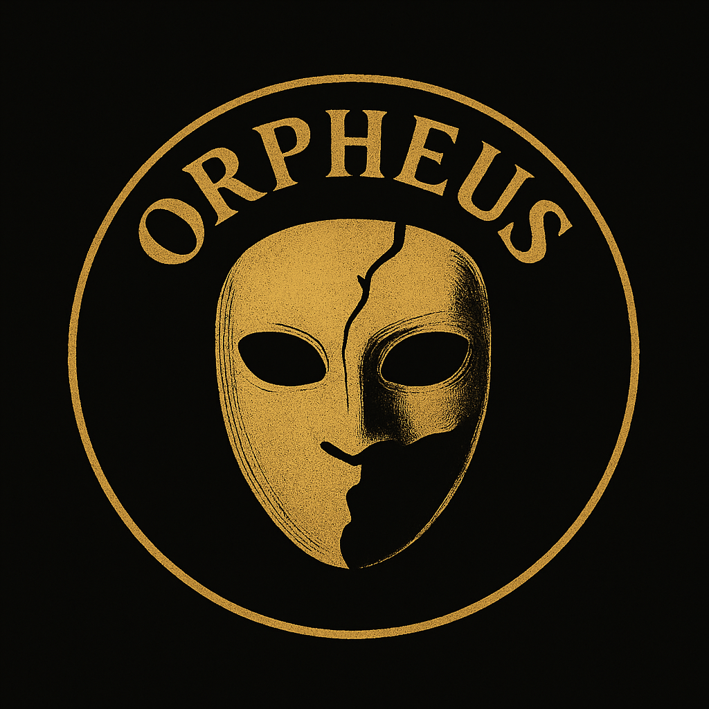

Groupe : Orpheus
ℹ Informations
- Nom : Orpheus
- Création : 2025
- Adresse : Inconnue
- Type : Illégal
- Rôles : Achat & vente d’or, braquages, rdv fleeca, etc.
⭐ Étymologie du nom
Orphée proviendrait du grec "orphen" = « obscurité ». D'autres interprétations : "Ophreus" = « le renfrogné », ou encore "oreafone" = « la plus belle voix ».
📖 Histoire
Dans les ruines d’un passé violent, Riky et Jimmy, issus de groupes disparus, se croisent. L’un maîtrise l’écoulement de l’or, l’autre trouve un atelier oublié. Ensemble, ils créent Orpheus : discret, intelligent, structuré.
Ni gang, ni mafia, mais un réseau silencieux. Les membres sont choisis avec soin : loyaux, autonomes, discrets. Pas de QG, pas de chef visible. Juste des ombres qui avancent dans la ville…